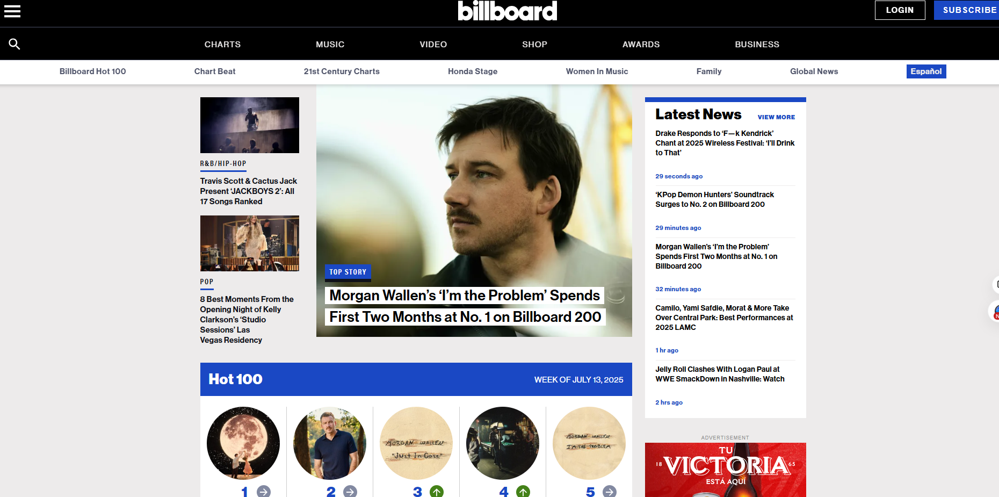
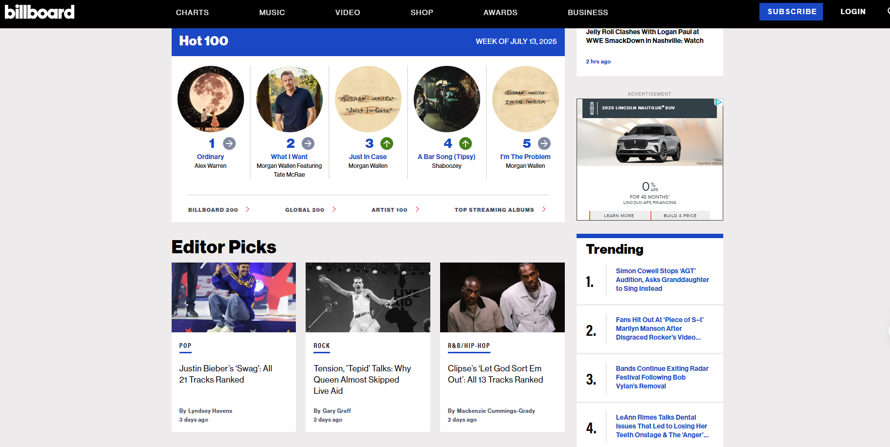
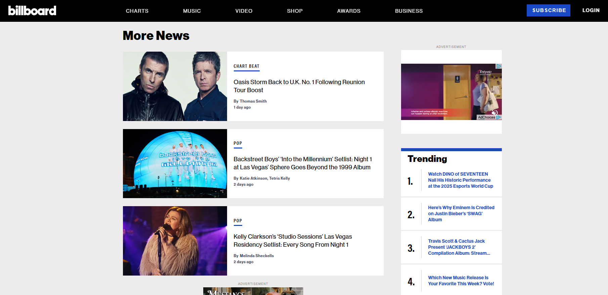

Billboard.com effectively applies the contrast design principle to guide user attention. The black and white heading stands out clearly and lets the reader know what site they are visiting. The large center picture, along with the bold black and white text against the blurred background, draws the viewer’s eye to the main story. Bright blue accents add visual hierarchy and separate content areas. The use of black text on a white background in the Latest News sidebar improves readability and contrast. Overall, Billboard uses sharp visual differences in color, font weight, and layout to prioritize information and keep users engaged.
Billboard.com effectively uses the repetition design principle to enhance readability and navigation. The black and white header carries over as you scroll through the site. The consistent use of bold section headers (e.g., “Hot 100,” “Editor Picks,” “Trending”) with similar font styles and spacing creates visual unity across the page. Repeated image and text card layouts make it easy to scan for information. The blue highlight bar and recurring font colors reinforce brand identity and guide user attention. However, the variation in thumbnail sizes between “Hot 100” and “Editor Picks” slightly disrupts consistency. Overall, the repeated design elements support clear communication and easy content discovery.
Billboard.com demonstrates strong use of the alignment design principle. Headings, images, and text blocks are neatly aligned along a clear grid, which enhances readability. The left-aligned article preview and large image align well with the vertically stacked thumbnails and titles on the right, creating visual balance. Navigation tabs at the top (e.g., POP, ROCK, etc.) are evenly spaced and aligned. This structured layout improves clarity, ensuring that content is easy to locate and easily digested.

Billboard.com effectively applies the proximity design principle to support readability and communication. Headlines, images, and bylines are grouped tightly together. Adequate spacing between separate news stories helps distinguish one from the next, making it easy for users to scan the page without confusion. The Trending section also benefits from consistent spacing between numbered items, reinforcing its structure. However, the proximity of the advertisement to the content on the right can be slightly distracting. Overall, proximity is used well to organize and separate content clearly.
The Billboard.com website effectively uses the core design principles of contrast, repetition, alignment, and proximity (CRAP) to enhance readability, navigation, and user engagement. Strong contrast in headlines and section labels draws attention to key stories, while consistent repetition of fonts, colors, and layouts creates visual harmony across the site.